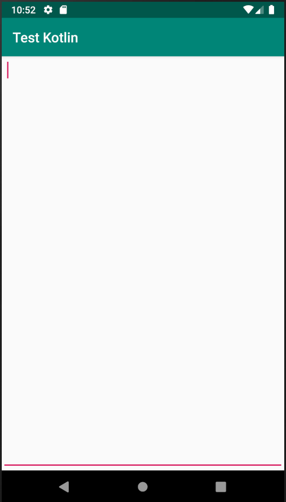

之前有写过一个篇学习和分析Android attr,style,theme原理的blog， 在实际应用中遇到时，尤其是一些系统空间，用起来和分析起来还是不是那么得心应手，这次就从系统控件EditText入手分析一下，看看Android的style到底怎么定义怎么生效怎么影响控件的。
1 系统默认的EditText ATTACH
这是一个Materail Design下的系统默认的全屏的EditText

注意这里有几个明显的外观上的特点
- 红色的光标
- 红色的下划线
- 具有上下左右四边均有一定的边距，但是我们并没有设置padding
布局文件如下：
<?xml version="1.0" encoding="utf-8"?> <androidx.constraintlayout.widget.ConstraintLayout xmlns:android="http://schemas.android.com/apk/res/android" xmlns:tools="http://schemas.android.com/tools" xmlns:app="http://schemas.android.com/apk/res-auto" android:layout_width="match_parent" android:layout_height="match_parent" tools:context=".MainActivity"> <EditText android:id="@+id/edit_view" android:layout_width="0dp" android:layout_height="0dp" android:gravity="start" app:layout_constraintBottom_toBottomOf="parent" app:layout_constraintLeft_toLeftOf="parent" app:layout_constraintRight_toRightOf="parent" app:layout_constraintTop_toTopOf="parent" /> </androidx.constraintlayout.widget.ConstraintLayout>
光标是比较容易设置的，当时下划线和边距是从哪里来的？一开始我一直以为是 EditView控件自己绘制的，后来查资料想要去掉下划线时发现下划线是个 background的属性，那它是什么时候被设置的？在哪里被设置的？这个下划线是怎么实现的？下面来分析下划线和边距是如何被系统设置和生效的。
2 Theme的声明
从Theme入手，我们的Theme定义如下：
<style name="AppTheme" parent="Theme.AppCompat.Light.DarkActionBar">
先看一下一个Theme需要定义哪些键值对，对Theme的声明见系统文件 attrs.xml，每个SDK包都有。
<resources> <!-- These are the standard attributes that make up a complete theme. --> <declare-styleable name="Theme"> <!-- ============== --> <!-- Generic styles --> <!-- ============== --> <eat-comment /> <!-- Specifies that a theme has a light background with dark text on top. --> <attr name="isLightTheme" format="boolean" /> ... <!-- Default EditText style. --> <attr name="editTextStyle" format="reference" /> ... <!-- EditText text foreground color. --> <attr name="editTextColor" format="reference|color" /> <!-- EditText background drawable. --> <attr name="editTextBackground" format="reference" /> </declare-styleable> ... </resources>
这里可以看到一个Theme是可以定义EditStyle,background等属性的。
3 Theme的定义
在系统文件themes.xml定义系统Theme声明的各个字段的值。
<resources> <!-- The default theme for apps on API level 10 and lower. This is the theme used for activities that have not explicitly set their own theme. <p>You can count on this being a dark background with light text on top, but should try to make no other assumptions about its appearance. In particular, the text inside of widgets using this theme may be completely different, with the widget container being a light color and the text on top of it a dark color. <p>If you're developing for API level 11 and higher, you should instead use {@link #Theme_Holo} or {@link #Theme_DeviceDefault}.</p> --> <style name="Theme"> <item name="isLightTheme">false</item> ... <item name="editTextStyle">@style/Widget.EditText</item> ... <item name="editTextBackground">@drawable/edit_text</item> </style> ... </rescources>
这里可以看到，editTextStyle定义的值是一个引用指向到Widget.EditText， Theme.AppCompat.Light.DarkActionBar Theme实际编译出来的editTextStyle 和editTextBackground定义的值和上面不一样，但是我没有找到 Theme.AppCompat.Light.DarkActionBar主题的定义文件，可能在support包中，不过并不影响理解，和上面最基本的Theme的定义方式是一样的。 Theme.AppCompat.Light.DarkActionBar主题具体的值如下：
<item name="editTextStyle">@style/Widget.AppCompat.EditText</item> <item name="editTextBackground">@drawable/abc_edit_text_material</item> <item name="editTextColor">?android:attr/textColorPrimary</item>
已经很接近了。 Widget.AppCompat.EditText样式的定义在文件stylesmaterial.xml文件中
<style name="Widget.Material.EditText" parent="Widget.EditText"/>
最终Widget.EditText的定义在系统的styles.xml文件中
<style name="Widget.EditText"> <item name="focusable">true</item> <item name="focusableInTouchMode">true</item> <item name="clickable">true</item> <item name="background">?attr/editTextBackground</item> <item name="textAppearance">?attr/textAppearanceMediumInverse</item> <item name="textColor">?attr/editTextColor</item> <item name="gravity">center_vertical</item> <item name="breakStrategy">simple</item> <item name="hyphenationFrequency">normal</item> <item name="defaultFocusHighlightEnabled">false</item> </style>
而EditText的声明也是在attrs.xml文件中，具体比较长就不贴了，没搞明白包名怎么给的，就是widget。*重点是到这里，就跟自定义view用到的字段开始一一对应了，*看上面的EditText style的定义，都是EditText的属性，这里可以看到background的值是一个样式属性attr/editTextBackground，而这个值在前面给了，就是@drawable/abcedittextmaterial
4 EditText的background
我们再看一下drawable/abcedittextmaterial
<?xml version="1.0" encoding="utf-8"?> <!-- Copyright (C) 2014 The Android Open Source Project Licensed under the Apache License, Version 2.0 (the "License"); you may not use this file except in compliance with the License. You may obtain a copy of the License at http://www.apache.org/licenses/LICENSE-2.0 Unless required by applicable law or agreed to in writing, software distributed under the License is distributed on an "AS IS" BASIS, WITHOUT WARRANTIES OR CONDITIONS OF ANY KIND, either express or implied. See the License for the specific language governing permissions and limitations under the License. --> <inset xmlns:android="http://schemas.android.com/apk/res/android" android:insetLeft="@dimen/abc_edit_text_inset_horizontal_material" android:insetRight="@dimen/abc_edit_text_inset_horizontal_material" android:insetTop="@dimen/abc_edit_text_inset_top_material" android:insetBottom="@dimen/abc_edit_text_inset_bottom_material"> <selector> <item android:state_enabled="false" android:drawable="@drawable/abc_textfield_default_mtrl_alpha"/> <item android:state_pressed="false" android:state_focused="false" android:drawable="@drawable/abc_textfield_default_mtrl_alpha"/> <item android:drawable="@drawable/abc_textfield_activated_mtrl_alpha"/> </selector> </inset>
终于看到了边距和下划线。inset的官方文档见这里
5 Theme和Style中定义的属性值如何在view中使用
看一下Attributeset和TypedArray已经R.styleable.*的源码即可
6 总结
从上面整个过程可以看出，搞明白了EditText的样式设置过程基本上也就搞明白了Theme和style
- attrs.xml中声明了Theme和它需要定义的属性，这些属性都是自定义的，跟Android控件没有任何关系
- themes.xml中定义了指定Theme中各个属性的值，这个值可以是个具体的值也可以是个引用，对于editTextStyle它的值指向了一个style
- Widget.EditText这个style就跟EditText控件有关系了，具体的值又可以引用样式属性
- 最终background的值定义到了一个drawable
- 包括EditText是如何取到这个值的